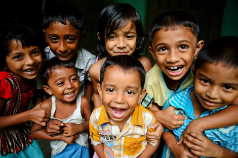

|
|
|
| Home | About Us | Our Work | Events | Donation | Contact Us | Log Out |
|---|
About Us
Aadhar Foundation is group formed by youngsters to provide platform to work on Aadhar Foundation, Mumbai (Reg. No. MH/G.B.B.S.D 1427/2014/Mumbaifferent issues of society. Aadhar is currently working in the field of EDUCATIONù and also on different social awareness programs. Aadhar was established in March, 2013 and was registered in July, 2014.

VISION :-
To Empower eligible youth by Encouraging and Fulfilling Educational Necessities and transforming community through various sustainable programs for different social causes.
MISSION :-